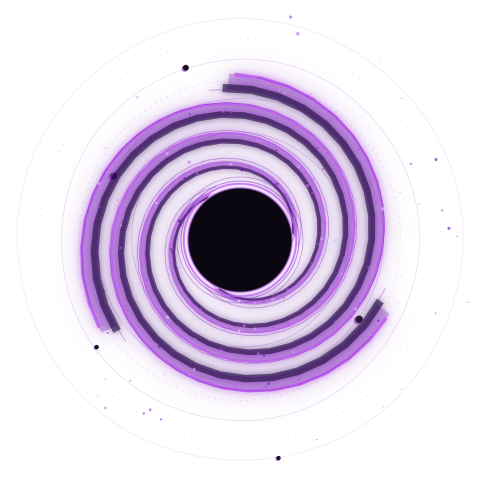
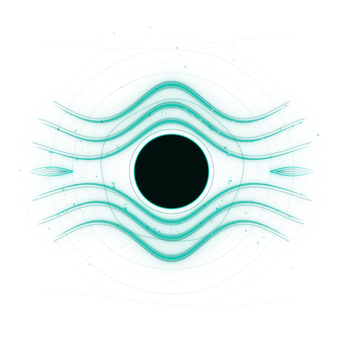
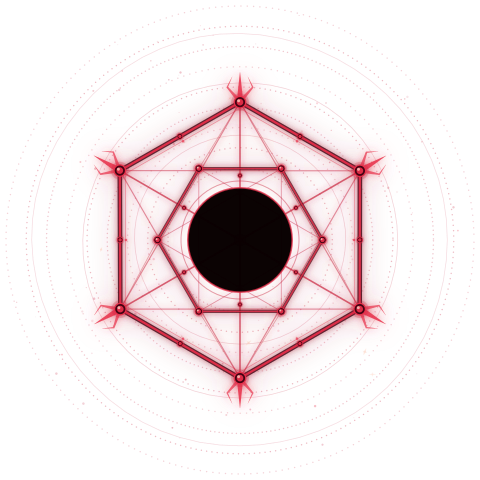
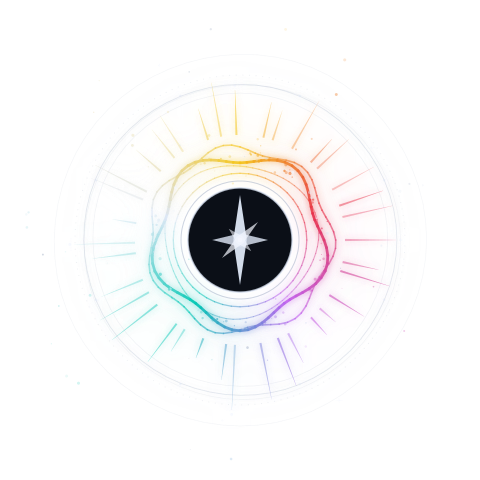

A Wizards' Contest · 2–7 Players
Archmage Ascension
Draw magical components from the depleting Source and arrange them into spells in your Spellbook. When the Drought ends, the wizard with the most refined Spellbook ascends.




Start here
New to the game? A competitive card game for 2–7 players, 30–60 minutes: build spells from four energies while the shared Source runs dry. The player site below uses the game's new title, Arcane Drought. Current rules: v3.1, under test.
Learn to Play
Before your first gameYour first game in five minutes, one screen at a time, with small interactive explainers for the tricky bits.
START LEARNING → Current · v3.1Table Companion
On your phone · mid-turnThe quick reference: check a hand, see what each spell does, follow the turn, add up the score.
OPEN AT THE TABLE → Current · v3.1Full Rules
Settling disputesEvery rule, in the order the board shows them. Searchable and printable.
READ THE RULES → Current · v3.1Arcane Drought Player Site
Home of the player siteThe landing page that ties Learn, Play, Rules and the Trials companion together.
OPEN →Rules & reference
The classic web references (also v3.1) and the rulebook source files, which open formatted on GitHub.
Online Rules (classic)
One long pageThe full reference in the board's order, plus the score calculator and the Ascension Trials variant.
OPEN → Under test · v3.1Quick Reference Card (classic)
On your phone · mid-turnCan I cast this? What does it do? What can I do in Learning? Includes a hand checker that spots every spell you can form.
OPEN →Rulebook source (Markdown)
- Complete Rulebook (v3.1, under test)The canonical rulebook every other page follows.
- Scoring System Reference (v3.1, under test)Every score table and scoring rule in one place.
- GlossaryEvery game term, defined once.
- StoryThe world and the end-of-game narrative.
Play
Play Online on Screentop
In your browser · 2–4 playersThe full table on Screentop.gg: 62-card deck, v3.1 board and counters. Free, no install.
OPEN TABLE (SCREENTOP.GG) → Predates v3.1The Board (A3 print file)
On the table · everyone at onceSet-up, Normal Turn, Drought Turn, the Array and Recognition Points. Score panel still shows the pre-v3.1 values; a v3.1 reprint is queued.
PDF → Work in progressInteractive Game
Preview · solo vs. AIAn early digital vertical slice, separate from the tabletop materials. Its rules may lag the current version.
OPEN →Variants & expansions
In development: these are design drafts and companions for optional modes, not part of the base game.
Ascension Trials Companion
End of game · advanced variantEnter Spellbooks, allocate power in secret, reveal together. Each player can join from their own phone.
OPEN → In developmentTrials · Multiplayer (classic)
End of game · advanced variantThe original Trials companion: power domains, secret allocation and winner determination at the table.
OPEN → In developmentExpansion Designs
All concepts in one catalogueEvery expansion and mode under design, with its stage and status.
BROWSE →Variant rules
- Ascension Trials rules (Markdown)The advanced end-game variant's rules text.
- Ascension Trials design pageStatus and design notes for the variant.
- Solo Mode: The Attuned Rival (v0.1)Play alone against an automated rival.
Expansion drafts
- The Schools (v0.1)Draft rules for the Schools expansion.
- The Last Rites (v0.1)Draft rules for the Last Rites expansion.
- Foci & Conduits (v0.1)Draft rules for the Foci & Conduits expansion.
- Rituals & Mastery Seals (v0.1)Draft rules for the Rituals expansion.
- The Null Cabal (v0.1)Draft rules for the Null Cabal expansion.
- The Schism (v0.1)Draft rules for the two-player depth box.
- Spell DuelsReconciled ruleset with complexity tiers.
- The ConclaveConcept page.
- Co-op & solo concept (Direction 4)Concept page: the players work together against the dying Source.
- The Living ArrayConcept page.
- The OvertonesConcept page.
Older rule versions (archive)
Not current. Kept for reference only; scores and rules here differ from v3.1.
- Online Rules, v2.8 snapshotArchive · not current. Unstyled copy; some links inside it no longer work.
- Quick Reference Card, v2.8 snapshotArchive · not current. Unstyled copy; some links inside it no longer work.
- Complete Rulebook v2.8 (Markdown)Archive · not current.
- Scoring System Reference v2.8 (Markdown)Archive · not current.
- Spellbook OptimizerUses v2.8 scores. Finds the Spellbook split that scores highest, plus runners-up.
Designer workshop (work in progress)
Design in progress, not rules. These are the designer's working files: drafts, reviews and card renderers. If anything here disagrees with the player pages above, the player pages win.
Studio
Designer hubDesigner tools and work in progress for the player site.
OPEN → Work in progressCard Playtable
Card rendererLive card renderer: single card, grid, fanned hand, or print proof at true size with bleed.
OPEN → Work in progressPitch Sheet
For publishersOne-page overview of the game's premise, mechanics and theme.
OPEN →Design notes
- Expansion concepts: player interaction & conflictIdea bank for interactive expansions.
- Expansion directions after EchoExploration of where expansions could go next.
- Old expansion thread: review & salvageWhat was kept from earlier expansion work.
- Schools & Last Rites playtest plansPlaytest plan templates for the two expansions.
- Vocabulary & metadata notesAutomated checks on the expansion pages.
- Idea refinery: eval reviewReview of the design-assistant evaluation runs.
Card design
- Mobile playtableThe card renderer laid out for a phone.
- Playtable layout sandboxLayout experiments for the renderer.
- Card face alternatives (2026-09-30)Side-by-side review of candidate card faces.
- Master style boardThe visual system on one board.
- Card review boardCards laid out for review.
- Production boardProduction-ready card layout.
- Card back (print file)PDF of the card back for the printer.
- Card back (Component Studio export)PDF of the card back from the alternate export.
Playtest kit: 6-player French session
- Référence du joueur (French reference)Player reference in French. PDF version.
- Feuille de retour (French feedback sheet)Post-game player feedback form. PDF version.
- Observation gridHost's tally sheet for the session. PDF version.